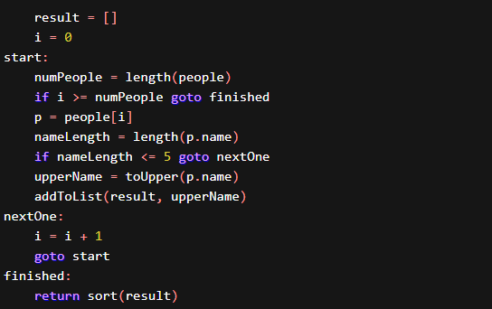
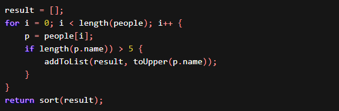
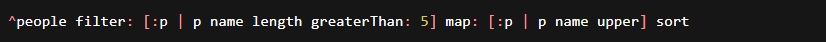
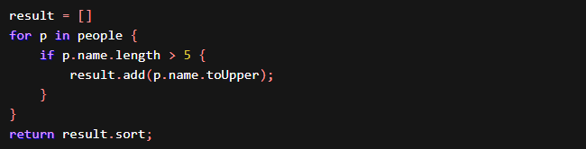
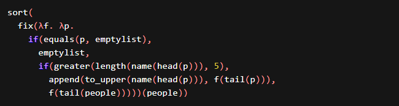
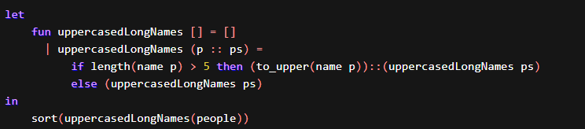

Programming Pradigms
Source: cs.lmu
Do you solve problems by just jumping in, willing to ignore the experience and wisdom of
those that may have programmed solutions to problems very similar to yours? We learn
from the past. Our ancestors discovered and invented ways of programming that we know
call paradigms. We benefit from the knowledge they left us, even as we strive to create
new paradigms ourselves.
Definition
Some common Paradigms
Imperative: Programming with an explicit sequence of
commands that update state.
Declarative: Programming by specifying the result you
want, not how to get it.
Structured: Programming with clean, goto-free, nested
control structures.
Procedural:Procedural: Imperative programming with
procedure calls.
Functional (Applicative):Functional (Applicative):
Programming with function calls that avoid any global
state.
Function-Level (Combinator):Function-Level
(Combinator): Programming with no variables at all.
Object-Oriented: Programming by defining objects that
send messages to each other.
Objects have their own internal (encapsulated) state and public interfaces.
Event-Driven: Programming with emitters and listeners
of asynchronous actions.
Flow-Driven: Programming processes communicating with
each other over predefined channels.
Logic (Rule-based): Programming by specifying a set of
facts and rules. An engine infers the answers to questions.
Constraint: Programming by specifying a set of
constraints. An engine finds the values that meet the constraints.
Aspect-Oriented: Programming cross-cutting concerns
applied transparently.
Reflective: Programming by manipulating the program
elements themselves.
Array: Programming with powerful array operators that
usually make loops unnecessary.
Look at some Major Paradigms
Imperative Programming
Control flow in imperative programming is explicit: commands show how the computation takes place, step by step. Each step affects the global state of the computation.
Structured Programming
Control flow in Structured programming is a kind of imperative programming where control flow is defined by nested loops, conditionals, and subroutines, rather than via gotos. Variables are generally local to blocks (have lexical scope).
Early languages emphasizing structured programming: Algol 60, PL/I, Algol 68, Pascal, C, Ada 83, Modula, Modula-2.
Object Oriented Programming
OOP is based on the sending of messages to
objects. Objects respond to messages by
performing operations, generally called methods. Messages can have arguments. A
society
of objects, each with their own local memory and own set of operations has a different
feel than the monolithic processor and single shared memory feel of non object oriented
languages.
One of the more visible aspects of the more pure-ish OO languages is that conditionals
and loops become messages themselves, whose arguments are often blocks of executable
code. In a Smalltalk-like syntax:
This can be shortened to:
Many popular languages that call themselves OO languages (e.g., Java, C++), really just take some elements of OOP and mix them in to imperative-looking code. In the following, we can see that length and toUpper are methods rather than top-level functions, but the for and if are back to being control structures:
The first object oriented language was Simula-67; Smalltalk followed soon after as the first “pure” object-oriented language. Many languages designed from the 1980s to the present have labeled themselves object-oriented, notably C++, CLOS (object system of Common Lisp), Eiffel, Modula-3, Ada 95, Java, C#, Ruby.
Functional Programming
In functional programming, control flow is expressed by combining function calls, rather than by assigning values to variables:
Yikes! We’ll describe that later. For now, be thankful there’s usually syntactic sugar:

A programming paradigm is a style, or “way,” of programming. Some languages make it easy to write in some paradigms but not others
Never use the phrase “programming language paradigm.” A paradigm is a way of doing something (like programming), not a concrete thing (like a language). Now, it’s true that if a programming language L happens to make a particular programming paradigm P easy to express, then we often say “L is a P language” (e.g. “Haskell is a functional programming language”) but that does not mean there is any such thing as a “functional language paradigm”.